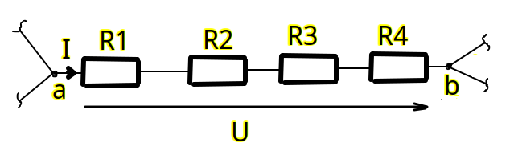
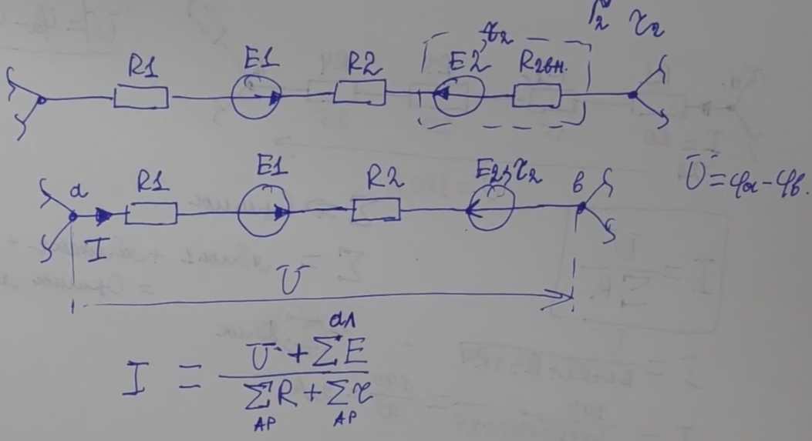
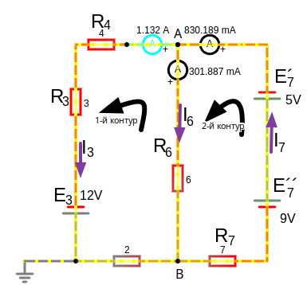
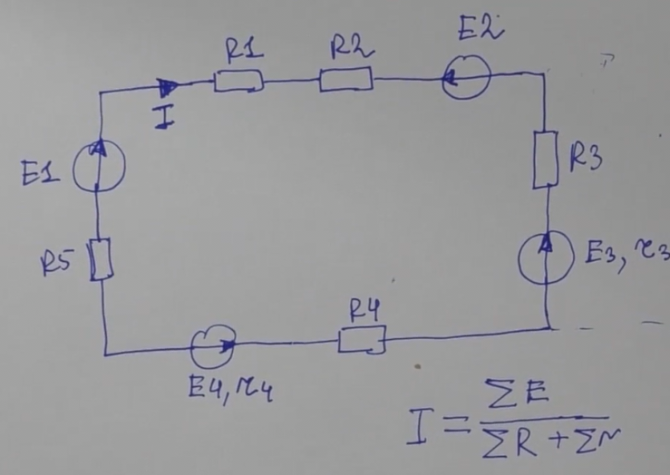
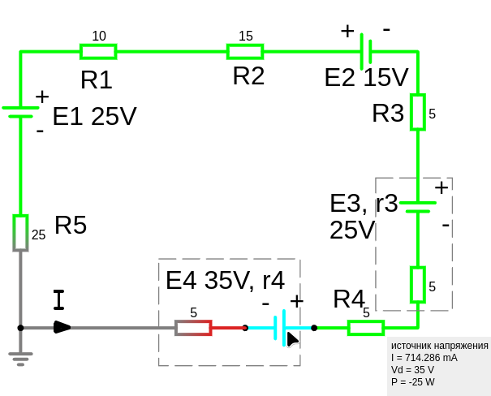
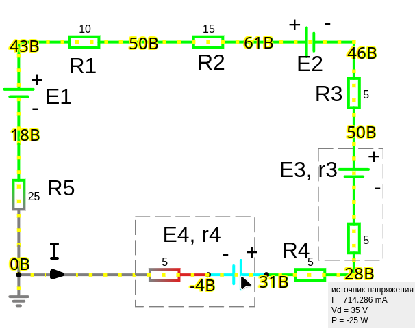

Урок 7. Закон Ома. Три формы записи.
Закон Ома
Закон Ома описывает зависимость между напряжением (), током () и сопротивлением () в электрической цепи. Формулируется следующим образом:
Где:
- — сила тока в амперах (),
- — напряжение в вольтах (),
- — электрическое сопротивление в омах ().
Три формы записи закона Ома
I Закон Ома для участка цепи с пассивными элементами:
где:
- — напряжение на нагрузке (В). Это напряжение на всей оставшейся части цепи которое подходит к точкам данной ветви.

II Закон Ома для участка цепи с источником ЭДС (присутствие активных компонентов):
Сила тока на участке цепи с ЭДС равна часному отделения. В числителе напряжение на участке направление которого соврадает с током плюс алгебраическая сумма всех ЭДС участка цепи, в знаменателе арифметическая сумма всех сопротивление пассивных компонентов плюс арифметическая сумма всех внутренних сопротивление источников ЭДС.
Алгебраическая сумма — учитывает знаки, т.е. учитывает направление тока.
Арифметическая сумма — не учитывает знаки.
Формула гибкая и зависит от того, как ты обозначаешь направления напряжений и ЭДС.
Это означает, что если напряжение направлено в ту же сторону, что и ток, то оно берется со знаком "+".
Если же оно направлено против тока, то его надо записать со знаком "-" (что и приводит к виду)
где:
- — это внутреннее сопротивление ЭДС. Часто пишут, просто через запятую.
- — напряжение на нагрузке (В)
- — ЭДС источника (В),
применяется в этом типе закона Ома из-за того что напряжение как следует из второй закон Кирхгофа (закон напряжений) следует что в замкнутом контуре (которым и является ветвь если замнуть ее крайние точки между собой) должно удовлетворятся условие — сумма напряжений в любом замкнутом контуре равна нулю. Это означает, что если мы "обходим" контур, то сумма всех падений напряжения (включая ЭДС и падения на сопротивлениях) должна быть равна нулю. И так как после этих точек есть какое-то количество других ветвей, это не важно, главное что крайние точки нашей ветви обладают какой-то суммой падений наряжений, которые должны учитываться в нашей ветви так как у нас есть источник ЭДС, вот это и учитывается!
Вообщем, первая запись закона Ома для участка цепи с пассивными элементами тоже имеет , но у нас есть источник ЭДС в ветви, поэтому мы должны его учитывать
Также можно записать:
То есть напряжение на нагрузке будет меньше ЭДС на величину падения напряжения на внутреннем сопротивлении источника. Так как ЭДС входит в сумму всех падений напряжений.

где:
- — прибавляем так как ЭДС совпадает с направлением тока (алгебраическая сумма)
- — отнимаем так как ЭДС не совпадает с направлением тока (алгебраическая сумма)
Пример расчета тока по закону Ома для участка цепи с источником ЭДС

Выбрав произвольно направления токов и направления обхода 2-x независимых контуров, нам потребуется составить уравнение по первому правилу Кирхгофа, и . Итого уравнения.
Для узла А по первому правилу Кирхгофа:
Для 1-го контура по второму правилу Кирхгофа:
Для 2-го контура по второму правилу Кирхгофа:
решив эту систему уравнений получим:
Теперь мы можем проверить формулу рачета тока по закон Ома для участка цепи с источником ЭДС
для тока
где:
- − так как совпадает с направлением тока
- − так как не совпадает с направлением тока
- − это внешнее напряжение источника для ветви в которой течет ток . Это напряжение между точка A,B
, подставляем:
где:
− так как совпадает направление внешнего напряжения с направлением тока
И для тока внешнее напряжение источника тоже будет между точка A,B:
где:
− так как не совпадает направление внешнего напряжения с направлением тока
III Закон Ома для замкнутой не развлетленной цепи состоящей из одной ветви:
Неразветвленная электрическая цепь — это такая цепь, в которой все элементы соединены последовательно, то есть образуют один непрерывный путь для протекания электрического тока. Другими словами, в такой цепи нет узлов, где ток может разделиться на несколько ветвей.
Ток для всех компонентов цепи будет одинаковым из-за того что цепь не развлетленная.
Примеры неразветвленных цепь:
- Гирлянда новогодних лампочек: Лампочки соединены последовательно, образуя неразветвленную цепь.
- Простой фонарик: В фонарике батарейка и лампочка соединены последовательно.
Сила тока пропорциональна алгебраической сумме всех ЭДС и обратнопропорциональна арифметической сумме всех пассивных элементов и внутренних сопротивлений источников ЭДС
Выбираем предпологаемое направление тока:

Параметры:
- R3 = 5 Ом
- E2 = 15 В
- R2 = 15 Ом
- R1 = 10 Ом
- E1 = 25 В
- R5 = 25 Ом
- E4 = 35 В, r4 = 5 Ом
- R4 = 5 Ом
- E3 = 25 В, r3 = 5 Ом
где:
- — говорит нам что мы выбрали неверное направление тока, ток будет протекать в противоположном направлении
В программе www.falstad.com можно нарисовать схему и запустить, мы видим направление движения тока и если навести курсов на элемент то увидим показатели тока 0.714,A

Зеленый цвет обозначает положительное напряжение. Серый цвет обозначает заземление. Красный цвет обозначает отрицательное напряжение.
Видно как суммируется вольтаж если у источников ЭДС совпадает направление. Для самое низкое напряжение на участке получилось в следствии того что, напряжение двигалось от c 61 вольтами и понижаясь постепенно от сопротивлений и встретило с противоложным знаком, в итоге напряжение иточчника 25 вольт отнялось от пришедших 43 вольт и получилось 18 вольт, если бы по какой-то причине ЭДС был больше чем пришедшие к нему 43 вольта то ток протекал бы в противоположную т.е. туда куда этот ЭДС выдает +. На распределение напряжений влияет нулевой потенциал заземления, с него начинается просчет.
Почему заземление влияет на распределение напряжений:
- Создание нулевого потенциала: Точка заземления условно принимается за ноль потенциала. Все остальные точки схемы имеют напряжение относительно этой точки.
- Заземление - это точка отсчета потенциалов: Все напряжения в схеме измеряются относительно точки заземления. Когда вы меняете место заземления, вы фактически меняете точку отсчета, что приводит к изменению всех напряжений в схеме.
- Обеспечение безопасных условий: Заземление отводит статические заряды и токи утечки в землю, снижая риск поражения электрическим током.
- Выравнивание потенциалов: Заземление помогает выравнивать потенциалы различных точек схемы, предотвращая возникновение опасных разностных потенциалов.
- Создание опорного потенциала: Заземление служит точкой отсчета для измерения напряжений в схеме.
- Влияние на импеданс схемы: Заземление может изменять импеданс схемы, особенно на высоких частотах, что может повлиять на ее работу.
Что означает отрицательное напряжение:
- Положительное напряжение означает, что потенциал относительно опорной точки выше.
- Отрицательное напряжение означает, что потенциал относительно опорной точки ниже.
- Направление электрического поля: Отрицательное напряжение означает, что электрическое поле направлено в противоположную сторону по сравнению с выбранным направлением отсчета.
- Разность потенциалов: Отрицательное напряжение указывает на то, что точка измерения имеет более низкий потенциал, чем точка отсчета.

Закон Ома в зависимости от искомой величины:
-
Для силы тока:
-
Для напряжения:
-
Для сопротивления:
Физический смысл закона Ома
- Сила тока прямо пропорциональна приложенному напряжению и обратно пропорциональна сопротивлению цепи.
- Чем больше сопротивление, тем меньше ток при одном и том же напряжении.
- Чем выше напряжение, тем больше ток при одном и том же сопротивлении.
Пример использования закона Ома
-
Задача 1:
Дано:- Напряжение ,
- Сопротивление .
Найти силу тока:
-
Задача 2:
Дано:- Сила тока ,
- Сопротивление .
Найти напряжение:
Ограничения закона Ома
-
Закон Ома применим только к линейным элементам цепи, где зависимость - остаётся линейной (например, резисторы).
-
Для нелинейных элементов (например, диоды, транзисторы) закон Ома в его классической форме неприменим. Здесь требуется учитывать их вольт-амперные характеристики (ВАХ).
Практическое применение закона Ома
-
Расчёт электрических цепей:
Используется для анализа простых и сложных электрических схем. -
Проектирование электроники:
Помогает выбрать подходящие компоненты (резисторы, источники питания и т. д.). -
Диагностика неисправностей:
Закон Ома позволяет выявить проблемы, такие как обрывы или короткие замыкания в цепи.
Закон Ома — это фундаментальный принцип электротехники, без которого невозможно анализировать или проектировать электрические цепи.